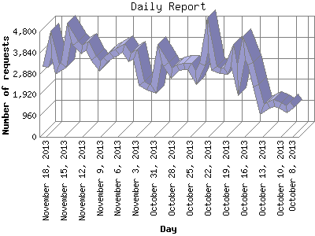

The Daily Report identifies the activity for each day within the reporting period. Remember that one page hit can result in several server requests as the images for each page are loaded.

| Day | Number of requests | Number of page requests | |
|---|---|---|---|
| 1. | October 8, 2013 | 1,474 | 65 |
| 2. | October 9, 2013 | 1,252 | 52 |
| 3. | October 10, 2013 | 1,442 | 124 |
| 4. | October 11, 2013 | 1,545 | 84 |
| 5. | October 12, 2013 | 1,428 | 75 |
| 6. | October 13, 2013 | 1,236 | 59 |
| 7. | October 14, 2013 | 2,318 | 106 |
| 8. | October 15, 2013 | 3,327 | 141 |
| 9. | October 16, 2013 | 4,051 | 188 |
| 10. | October 17, 2013 | 2,589 | 130 |
| 11. | October 18, 2013 | 3,734 | 222 |
| 12. | October 19, 2013 | 2,999 | 158 |
| 13. | October 20, 2013 | 3,018 | 197 |
| 14. | October 21, 2013 | 3,126 | 193 |
| 15. | October 22, 2013 | 4,667 | 245 |
| 16. | October 23, 2013 | 3,286 | 210 |
| 17. | October 24, 2013 | 2,672 | 154 |
| 18. | October 25, 2013 | 3,217 | 202 |
| 19. | October 26, 2013 | 3,223 | 188 |
| 20. | October 27, 2013 | 3,170 | 175 |
| 21. | October 28, 2013 | 2,887 | 226 |
| 22. | October 29, 2013 | 3,290 | 241 |
| 23. | October 30, 2013 | 3,812 | 218 |
| 24. | October 31, 2013 | 2,197 | 135 |
| 25. | November 1, 2013 | 2,253 | 136 |
| 26. | November 2, 2013 | 2,425 | 159 |
| 27. | November 3, 2013 | 3,768 | 189 |
| 28. | November 4, 2013 | 3,629 | 184 |
| 29. | November 5, 2013 | 4,038 | 197 |
| 30. | November 6, 2013 | 3,882 | 215 |
| 31. | November 7, 2013 | 3,728 | 217 |
| 32. | November 8, 2013 | 3,510 | 176 |
| 33. | November 9, 2013 | 3,208 | 154 |
| 34. | November 10, 2013 | 3,593 | 189 |
| 35. | November 11, 2013 | 4,156 | 226 |
| 36. | November 12, 2013 | 3,981 | 231 |
| 37. | November 13, 2013 | 4,266 | 218 |
| 38. | November 14, 2013 | 4,752 | 248 |
| 39. | November 15, 2013 | 3,244 | 184 |
| 40. | November 16, 2013 | 3,086 | 162 |
| 41. | November 17, 2013 | 4,243 | 196 |
| 42. | November 18, 2013 | 3,174 | 208 |
Most active day November 14, 2013 : 248 pages sent. 4,752 requests handled.
Daily average: 173 pages sent. 3,116 requests handled.
This report was generated on November 24, 2013 22:05.
Report time frame August 3, 2013 00:15 to November 18, 2013 23:25.
| Web statistics report produced by: analog 6.0 / Report Magic 2.21 |